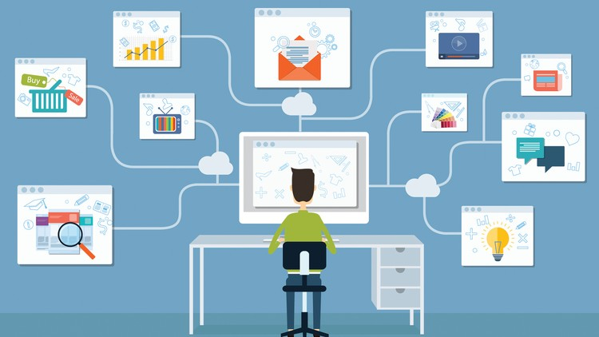
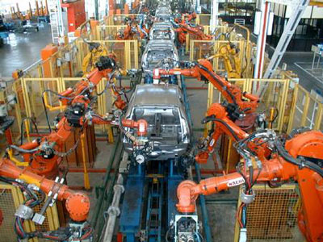
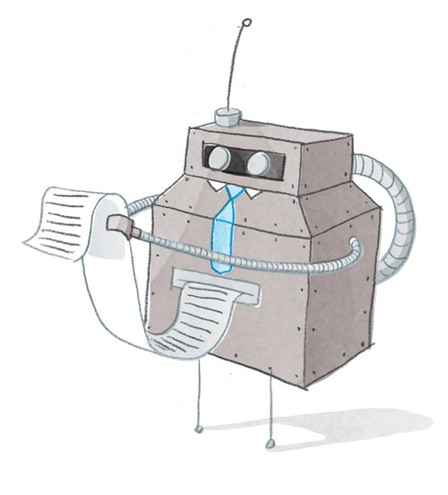

Business
Online services which are available to humans as of this time (while writing this E-book!) has impacted business strategies and techniques in a big way. While viewing generally, we can find a lot of positive effects caused by these services.
The rate of storing, processing and communicating information has increased a lot due to various services like audio/video conferencing and cloud storage. Businesses can now get more competitive and can reach a wider audience.

(place cursor to zoom or click to open image)
Also, the ability to reduce costs and workforce has been achieved by using robots (which also do repetitive work!) and the working patterns of employees have been affected in a good way.


(place cursor to zoom or click to open image)
Though there are a lot of positive effects, there are still negative effects on businesses. Many employees may lose their jobs because of implementing new robots. Tasks like implementing robots and new equipment, teaching existing employees new skill or, building and maintaining websites cost a huge amount of money.
(place cursor to zoom or click to open image)